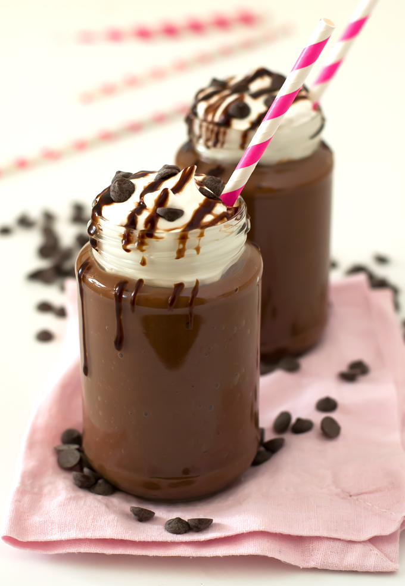

choclate milkshake
INGREDIENTS (1 CUP = 240ML)
ingredient for choclate shake
- 200 to 250 ml milk full fat and chilled
- 5 to 6 ice cubes or milk ice cubes
- 1 1/2 to 2 tbsp sugar organic (can replace with coconut jaggery/ sugar or maple syrup)
- 1 tbsp cocoa powder ( 1 used organic cocoa)
- 1 tbsp Grated choclate or ice cream or whipping cream for garnish
- 1/2 tbsp pure cinnamon (avoid cassia) (optional)
- 1 tbsp choclate syrup for decoratingthe glass (optional)
how to make the recipe
- add sugar and coca powder to a blender jar along with milk.Blend it until vcoca dissolves completly.
- Add milk ice cubes,cinnamon if desired and blend well again until forthy.
- if you wish to decorate your glass, then melt some choclate and pour it on the sides of the glass from inside.ypu can also use some th
- pour choclate milkshake to a serving glass and garnish with grated choclate or ice cream or whipped cream.
- serve choclate shake immediately as the flavor of cocoa changes as time passes by
